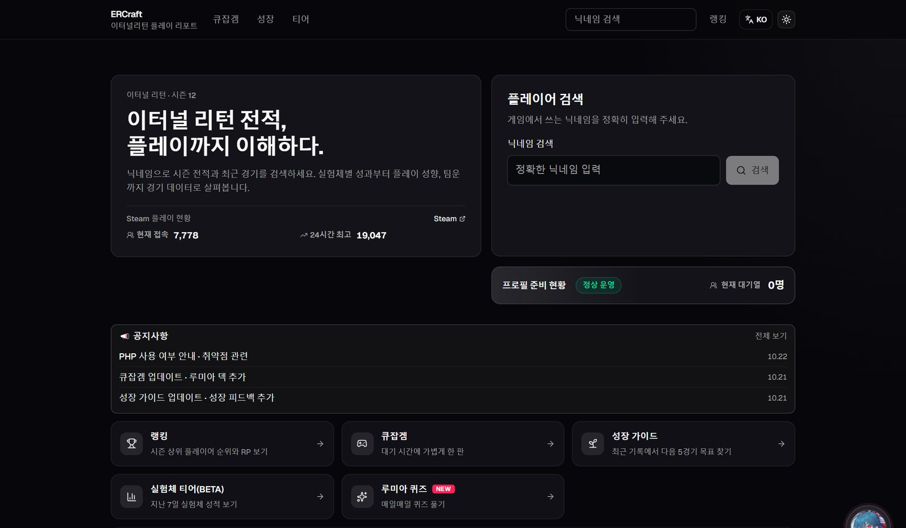
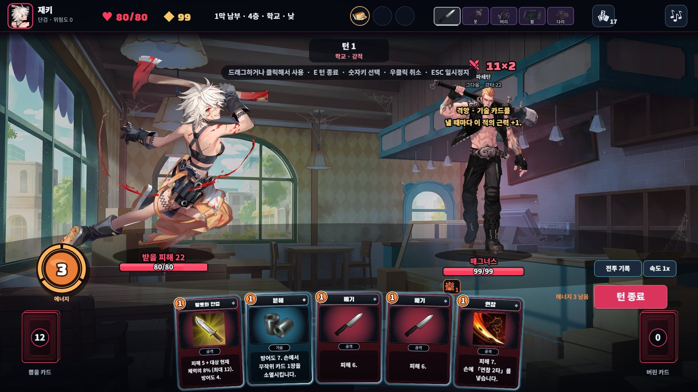
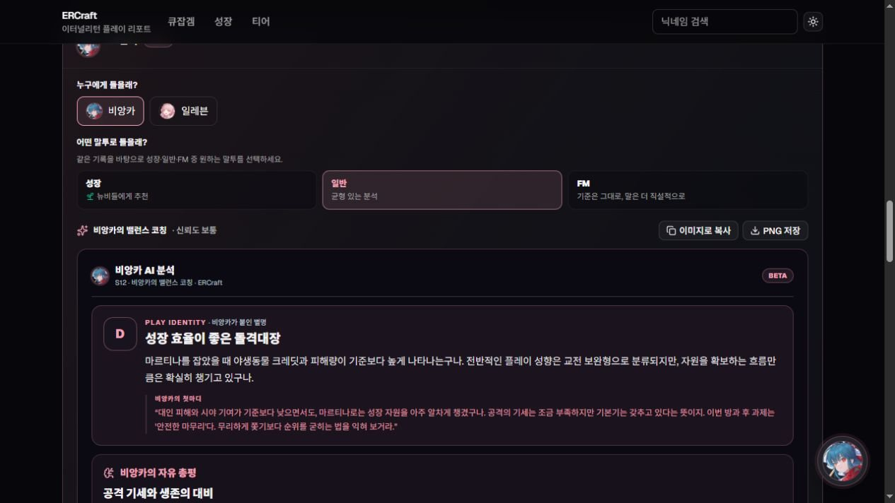

2026년 7월에 연 개인 프로젝트입니다. 기획부터 화면, 서버, DB, 배포까지 직접 맡고 있고, 코드는 Claude Code와 Codex로 씁니다.

8,814명9일간 방문자, 이 중 3,350명 재방문 · GA4, 2026.10.20–28
52만 건사용자가 직접 한 닉네임 검색 32만 건, 전적 갱신 20만 건 · 서버 기록, 최근 90일(8.2–10.31)
사례
3명→24명
문의한 경기에 저장된 플레이어 기록
"팀원 기록이 없다"는 문의를 받고 경기 기록을 다시 받아 왔습니다
ERCraft · 2026.10 · 사용자 문의 대응
팀원 기록이 "공식 기록 없음"으로 뜬다는 문의를 받고 확인해 보니, 24명이 있어야 할 경기 기록에 3명만 남아 있었습니다.
경기가 끝나기 전에 받아 둔 상세 기록이 완성본으로 저장돼 있었습니다. 받은 지 24시간이 안 됐는데 1등 기록이 없는 경기는, 전적을 갱신할 때 다시 받도록 고쳤습니다.
배포 후 문의한 사용자의 경기 6개가 복구되고 팀원 기록도 정상으로 뜨는 것을 확인했습니다. 7일이 지나 원본을 다시 받을 수 없는 경기는 "기록 부족"으로 따로 표시합니다.
5.3초→1.75초
첫 검색 대기 시간 · 그중 플레이어 확인 단계 4,077ms → 205ms
첫 검색 대기 시간을 줄였습니다
ERCraft · 2026.10 · Node.js, Fastify, 공식 게임 API
운영자용 진단 화면에서 첫 검색의 단계별 처리 시간을 보니, 플레이어 확인 단계 하나가 4초를 쓰고 있었습니다. 저장된 기록이 지금 검색한 플레이어의 것인지 확인하려고 공식 경기 목록에서 최근 경기 3개를 찾는 단계입니다.
코드가 이 목록을 매번 맨 앞부터 넘기고 있었습니다. 공식 API가 다음 페이지를 경기 번호로 넘겨준다는 걸 실제 응답으로 확인하고, 저장된 가장 최근 경기 다음부터 찾게 바꿨습니다. 찾지 못하면 기존처럼 처음부터 다시 조회합니다.
AI가 게임을 끝까지 플레이하는 테스트 도구를 만들었습니다
루미아 덱(덱빌딩 게임) · 2026.10 · TypeScript, Phaser, LLM API
덱빌딩 게임을 만들면서 밸런스를 고칠 때마다 사람이 여러 판을 해 볼 수는 없었습니다. 목표는 "처음 하는 사람은 1막 후반, 해 본 사람은 3막에서 막힌다"였습니다.
AI 모델이 실제 게임 엔진에서 한 판을 끝까지 플레이하게 했습니다. 매 턴 상황을 넘기면 모델이 낼 카드와 대상을 JSON으로 답하고, 규칙에 어긋난 행동은 막고 횟수만 기록합니다. 여러 판을 동시에 돌리고 끝난 판은 바로 저장해서, 중간에 끊겨도 남은 판만 다시 돌립니다. 10월 19일 하루에 모델 3개로 21차까지 돌렸습니다.
AI 점수를 올리려고 난이도를 낮췄다가, 직접 해 본 첫 판에 3막까지 쉽게 깼습니다. 너무 쉬워졌다고 보고 낮춘 부분 일부를 되돌렸습니다.

루미아 덱 전투 화면. 그림은 개발사 공식 팬킷을 썼습니다.
ERCraft를 운영하며 한 일
전적 삭제 요청을 받고 다음 날 노출 차단10월 26일 "내 전적을 지워 달라"는 요청을 받았습니다. 다음 날 검색, 프로필, API, AI 분석에서 그 계정이 보이지 않게 막는 기능을 배포했고, API 4개 경로와 화면에서 직접 확인했습니다. DB에 저장된 전적은 지우지 않았습니다.
개발사와 리플레이 파일 사용 조건 조율게임사 개발자와 리플레이 파일을 분석에 쓰는 조건을 맞췄습니다. 원본 파일은 분석 후 지우고, 삭제 요청 수단을 두고, 비공식 사이트라고 표시합니다.
가장 큰 테이블 38.95GB → 16.3GB서비스를 내리지 않고 압축했습니다. 압축 전후로 같은 표본 2,000행의 해시를 비교해 내용이 같은지 확인했습니다.
배포 뒤 생긴 오류를 같은 날 수정배포 당일 시즌 통계 API에서 500 오류가 약 3,500번 났습니다. 서버 로그에서 함수 인자 순서가 바뀐 걸 찾아 그날 고쳐 다시 배포했습니다.
AI 분석 문장의 숫자 검사LLM이 쓴 플레이 분석 문장의 수치를 원본 데이터와 자동으로 대조합니다. 불일치가 잡힌 문장은 화면에 내보내지 않습니다.

AI 분석 화면
React 19 · TypeScript · Vite · Node.js(Fastify) · Prisma · MySQL 8 · Python · Cloudflare Pages/Tunnel · Windows 서버 30일 요청 2,455만 건(Cloudflare, 캐시 포함, 9.27–10.27) · 수집해 저장한 경기 315만 판(참가자 전원 기록)
AI로 일하는 방식
Claude Code와 Codex로 코드를 씁니다. 무엇을 만들지 정하고, 바뀐 코드와 실제 화면을 확인한 뒤 배포합니다.
배포 전 테스트 확인배포 전에 전체 테스트를 돌려 기존 실패 목록과 비교하고, 새로 깨진 테스트가 없을 때만 배포합니다. 배포할 때 Git 훅이 테스트 기록을 확인해, 기록이 없거나 30분이 지났으면 진행을 막습니다.
AI 코드는 바뀐 범위부터 확인요청하지 않은 곳까지 같이 바뀌는 일이 잦아서 diff에서 그 부분을 먼저 봅니다. 중요한 변경은 코드를 쓴 모델과 다른 모델에게 한 번 더 검토를 맡깁니다.
받지 않은 제안다국어 AI 분석을 처음부터 외국어로 만들자는 제안이 있었습니다. 그러면 한국어 기준으로 만든 숫자·근거 검사를 건너뛰게 됩니다. 그래서 한국어로 먼저 만들어 검사를 통과시킨 뒤 번역하게 했습니다.
다른 작업
이터널 리턴 Open API 라이브러리TypeScript · 2026.10 · npm · GitHub 공개(MIT)
ERCraft에서 쓰는 Open API 연동 코드를 떼어 npm 패키지로 공개했습니다. 요청 속도 제한, 429 재시도, 시즌 번호 변환처럼 운영하며 다듬은 부분을 담았습니다. 태그를 올리면 GitHub Actions가 Node 18~24에서 테스트한 뒤 npm과 문서 사이트에 배포합니다.
공식 문서에 없는 응답 동작은 실제 경기 30판(594행)으로 확인해 실전 가이드로 정리했습니다. 예를 들어 게임을 포기한 플레이어는 순위와 팀 킬이 나간 시점 값으로 남아, 팀 값을 계산하는 코드도 이에 맞게 고쳤습니다.